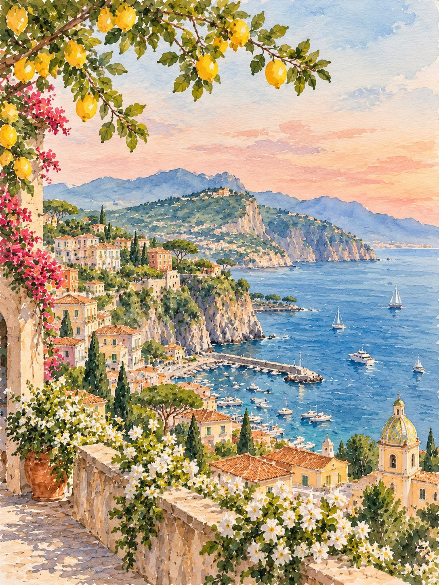

Naples International
About 50 km from Sorrento. Plenty of direct flights within Europe; from the US, connect through Rome, London, Paris, Frankfurt or similar.

Buon viaggio!
Sorrento was the first place we ever traveled together in Italy and we absolutely fell in love with it! Sorrento sits on the cliffs of the Amalfi Coast, about an hour south of Naples. Our wedding is at Capo Santa Fortunata, just outside town. Here's how to get there and make the most of the trip.
Naples is by far the easiest airport. Rome works well too if you want a few days there first.
About 50 km from Sorrento. Plenty of direct flights within Europe; from the US, connect through Rome, London, Paris, Frankfurt or similar.
Italy's main long-haul airport, with direct flights from many US cities. Take a train to Roma Termini, then the high-speed train to Napoli Centrale (about 70 minutes).
A small airport on the far side of the coast with a handful of seasonal flights. Handy if your route lines up, but check carefully.
Times are approximate and vary with traffic and season.
| Option | From | Time | Good to know |
|---|---|---|---|
| Private driver | Naples airport | about 1 hr | The easiest choice, especially with luggage or a group. Book ahead. |
| Ferry (the couple's favorite) | Naples port (Molo Beverello) | about 40 min | A taxi from the airport to the port takes around 20 minutes. Services depend on the weather. |
| Airport bus (Curreri) | Naples airport | about 75 min | Runs directly from the airport to Sorrento several times a day. Buy tickets on board or online. |
| Circumvesuviana train | Napoli Garibaldi station | about 70 min | Cheap and frequent, but crowded and not great with big suitcases. |
| Train + driver | Rome Fiumicino | about 3.5 hr | Train to Napoli Centrale, then a driver or the Circumvesuviana to Sorrento. |
The couple's preferred method of travel.
We'll share hotel suggestions with the invitation. If you'd like to start looking now, these areas are all close to the venue.
Walk to restaurants, the ferry port and Piazza Tasso. The most convenient base for the whole weekend.
A quieter neighborhood just east of downtown, with clifftop hotels and an easy walk or short taxi into town.
Further out toward the tip of the peninsula, with villas and views of Capri. Best if you plan to rent a car or a driver.
Early October is still warm and the sea is swimmable. Bring a light layer for evenings, and shoes you can manage on stone steps.
Sorrento is very walkable. Ferries run to Capri, Positano and Amalfi; SITA buses and drivers cover the coast road. We don't recommend driving yourself.
Cards are widely accepted, but keep some euros for taxis, beach clubs and small cafés.
US visitors need a passport valid for at least three months after departure. Check whether the EU's ETIAS travel authorization applies when you travel.
Andiamo!
A few of our favorite ways to spend a free day on the coast.
Boats leave Sorrento's Marina Piccola all morning. Go early to beat the crowds at the Blue Grotto, then ride the chairlift up Monte Solaro.
Ferry dock on the mapTake the ferry along the coast for the best views, wander the stairways of both towns, and come back by boat at sunset.
Positano on the mapA whole Roman city under Vesuvius, an easy ride on the Circumvesuviana. Allow half a day and bring water and a hat.
Tickets and hoursThe famous clifftop trail from Bomerano down toward Positano. Moderate, with views you won't forget. Wear real shoes.
Trailhead on the mapWalk through a lemon grove and taste limoncello where it was born.
A lemon grove in SorrentoRoll out fresh pasta and gnocchi with a local family, then sit down to eat it all with a glass of wine. A perfect afternoon in Sorrento.
Cooking classes nearby